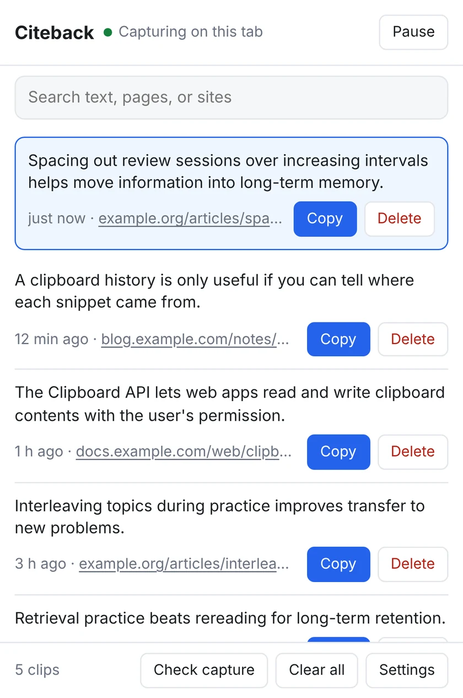
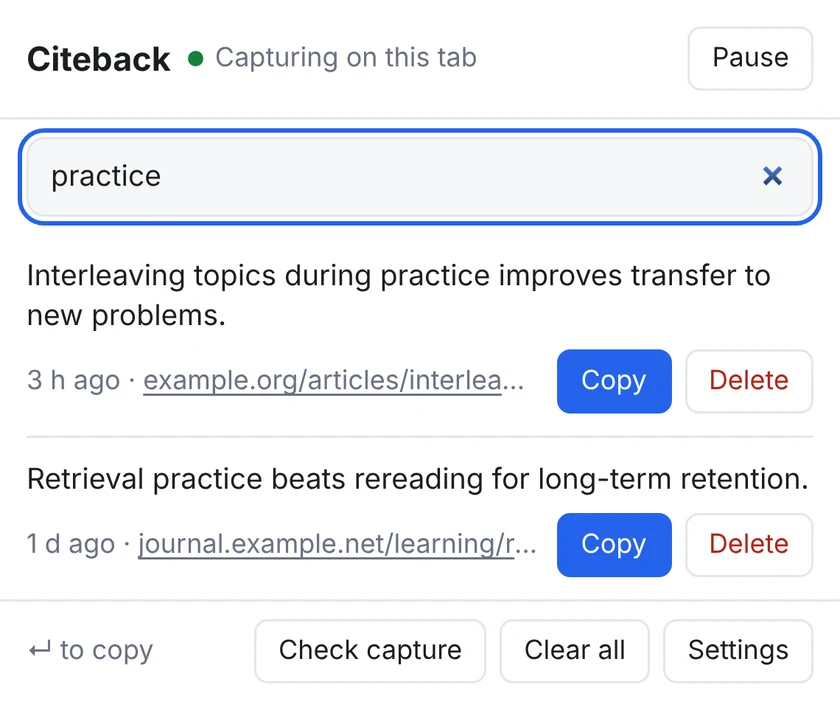
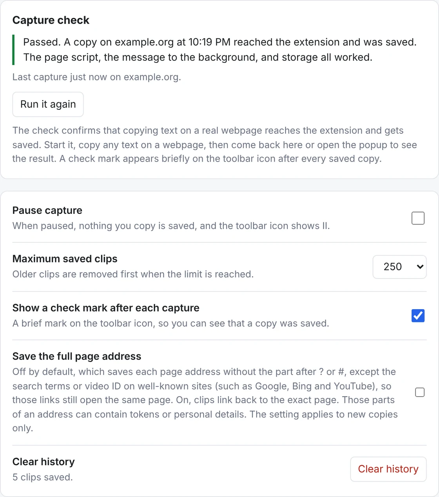

Never lose what you copy.
Citeback keeps the text you copy on webpages, plus the page it came from, so you can search it and copy it again later. No account, and nothing leaves your browser.
Works on webpages in Chrome. No sign-up.

- Stays on your device
- No account
- No analytics or ads
- Free to use
You copied it. Now where is it?
Your clipboard holds one thing at a time, and it never remembers where a snippet came from.
Gone with the next copy
Copy something else and the last thing is gone. If you didn’t paste it right away, you have to go find it again.
No idea where it came from
You pasted a good quote into your notes and forgot the link. Now which page was it?
Re-finding takes time
Digging through tabs and history for text you already had eats up minutes.
Copy as usual. Citeback does the rest.
Keep copying the way you already do.
Copy on any webpage
Select text and press Ctrl+C (⌘+C on Mac). That’s the whole step.
It’s saved with its source
Citeback stores the text, the page address and the time in your browser.
Search and copy it back
Search by text, page or site, then click Copy. Or press Enter to copy the top result.
Find it in seconds
Open Citeback with Ctrl+Shift+Y (⌘+Shift+Y on Mac), type a few letters, and hit Enter. No mouse needed.
- Search matches the saved text, the page and the site.
- The newest copy is highlighted, so you can see it landed.
- Click a clip’s source link to go back to the page.

What it does
Search everything you copied
Look up a clip by what it says, the page it came from, or the site.
The source on every clip
Every clip links back to its page. Search results and video pages keep the bit of the address that opens the same page.
Keyboard first
A shortcut opens it, Enter copies the top result. You can change the shortcut in Chrome.
Know it’s working
An optional check mark flashes on the toolbar icon after each save, and the capture check in Settings tests it on a real page.
Pause and clear anytime
One click pauses capture. Delete a clip, clear them all, or choose how many to keep, from 50 to 1,000.
Skips sensitive fields
Password fields and fields marked as card numbers or one-time codes are never saved.
Your clips stay on your computer
There is no server for it to go to.
- Everything is stored in your browser, on your device.
- No account, no sync, no analytics, no ads.
- Citeback makes no network requests and has no server.
- Pause capture or clear your history whenever you like.
Why does it ask to read all websites?
To notice when you copy text and to read the page title and address saved with it. It is used for nothing else. The privacy policy has the details.
What Citeback doesn’t do
- It only sees text copied on webpages. Text copied in other apps isn’t saved.
- Some sites copy with their own “Copy” buttons, which may not be captured.
- It doesn’t run in Incognito unless you allow it, or on pages like chrome:// and the Chrome Web Store.
- Saved clips aren’t encrypted, so anyone with access to your browser profile could read them.

Who it’s for
Students
Keep the quote and the page it came from while you write the paper.
Writers and journalists
Gather lines while you read, then find the one you need when you start drafting.
Researchers and analysts
Move across dozens of tabs without losing the passage or its source.
Everyone else
Copied an address, a code or a recipe step an hour ago? It’s still there.
How Citeback compares
There are many clipboard tools. Here is how the main kinds differ from Citeback.
| Citeback | Typical clipboard managers | Manual quote clippers | |
|---|---|---|---|
| Saves when you copy | Yes, automatically | Usually | You trigger each save |
| Keeps the source page | Yes, on every clip | Often not | Yes |
| Searchable history | Yes | Yes | Varies |
| Account required | No | Varies | Varies |
| Network requests | None | Varies | Varies |
| Projects and export | Coming in Pro | Varies | Varies |
These are broad categories, not specific products. Features differ between extensions, so check any tool you’re comparing.
Pro is for turning clips into work
The free version isn’t going anywhere. Pro is planned for people who use what they copy in notes, briefs and citations.
- Projects and research sessions, to keep clips together by topic.
- Copy with source, so a quote and its link paste together.
- Export to Markdown, CSV and more.
- A much larger archive, with backup and restore.
Questions
How do I see my clipboard history in Chrome?
Chrome doesn’t keep one for you. Citeback adds one for text you copy on webpages. Click its icon or press Ctrl+Shift+Y (⌘+Shift+Y on Mac) to see what you’ve copied, newest first.
Can I search text I copied earlier?
Yes. Open Citeback and start typing. Search matches the copied text, the page title and address, and the site.
Is Citeback free?
Yes. Saving, searching and copying back are free, with no account. A paid Pro version with extra tools is planned, and the free version stays.
Does it save passwords?
No. Password fields, and fields marked as card numbers or one-time codes, are ignored.
Where is my data stored?
In your browser’s local extension storage on your device. It is not sent anywhere. It isn’t encrypted, so anyone with access to your browser profile could read it.
Why does it need access to all websites?
To notice when you copy text on a page and to read the page’s title and address for the source link. It does nothing else with that access.
Does it work with text copied in other apps?
No. Citeback only sees text copied on webpages in Chrome. It isn’t a system-wide clipboard manager.
Does it work in Incognito?
Not by default. You can allow it in Chrome’s extension settings.
Why wasn’t something I copied saved?
Some sites copy with their own “Copy” buttons that don’t use a normal copy action, so Citeback may not see them. Tabs open before you installed Citeback need a refresh. The capture check in Settings tests it on a real page.
How do I delete my clips?
Delete one clip, use Clear all in the popup, or use Clear history in Settings. Uninstalling the extension removes the data from your browser.
Which browsers does it support?
Chrome. Other browsers aren’t supported yet.